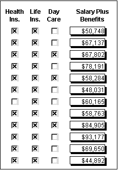
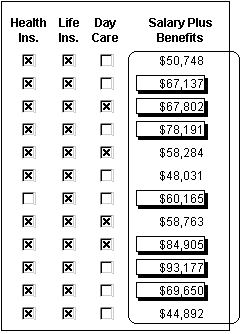
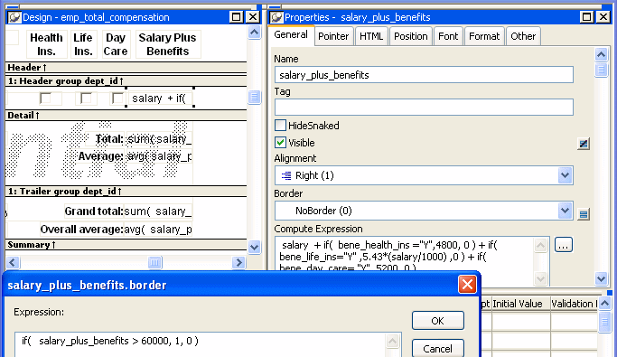
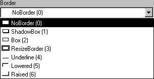

Every control in a DataWindow object has a set of properties that determines what the control looks like and where it is located. For example, the values in a column of data display in a particular font and color, in a particular location, with or without a border, and so on.
You define the appearance and behavior of controls in DataWindow objects in the DataWindow painter. As you do that, you are specifying the controls' properties. For example, when you place a border around a column, you are setting that column's Border property.
In most cases, the appearance and behavior of controls is fixed; you do not want them to change at runtime. When you make headings bold when designing them, you want them to be bold at all times.
In the following DataWindow object, the Salary Plus Benefits column has a Shadow box border around every data value in the column. To display the border, you set the border property for the column:

In some cases, however, you might want some properties of controls in DataWindow objects to be driven by the data, which is not known when you are defining the DataWindow object in the painter. For these situations you can define property conditional expressions, which are expressions that are evaluated at runtime.
You can use these expressions to conditionally and dynamically modify the appearance and behavior of your DataWindow object at runtime. The results of the expressions set the values of properties of controls in the DataWindow object.
In the following DataWindow object, the Salary Plus Benefits column has a Shadow box border highlighting each data value that is greater than $60,000:

To control the display of the border, you define a property conditional expression for the column's Border property. When users run the DataWindow object, PowerBuilder changes the border of individual data values based on the condition (value greater than $60,000).
The following illustration shows the Salary_Plus_Benefits column selected in the Design view. To the right of the Design view, the Properties view shows properties for the column, including the Border property. Next to the Border property is a button for accessing the dialog box where you enter the expression. The button displays an equals sign with a slash through it when no expression has been entered, and an equals sign without a slash when it has.

In this example the Border property is set to NoBorder in the Properties view. However, the expression defined for the property overrides that setting at runtime.
The expression you enter almost always begins with If. Then you specify three things: the condition, what happens if it is true, and what happens if it is false. Parentheses surround the three things and commas separate them:
If( expression, true, false )
The following expression is used in the example. Because the expression is for the Border property, the values for true and false indicate particular borders. The value 1 means Shadow box border and the value 0 means no border:
If(salary_plus_benefits > 60000, 1, 0)
When users run the DataWindow object, PowerBuilder checks the value in the computed column called salary_plus_benefits to see if it is greater than 60,000. If it is (true), PowerBuilder displays the value with the Shadow box border. If not (false), PowerBuilder displays the value with no border.
Usually you specify a number to indicate what you want for a particular property. For example, the following list shows all of the borders you can specify and the numbers you use. If you want the border property to be Shadow box, you specify 1 in the If statement, for either true or false.
In the Properties view, the list of choices for setting a property includes the values that correspond to choices in parentheses. This makes it easier to define an expression for a property; you do not need to look up the values. For example, if you want to specify the ResizeBorder in your expression, you use the number 3, as shown in the drop-down list.

For details on the values of properties that can be set using expressions, see "Supplying property values".
For complete information about what the valid values are for all properties associated with a DataWindow object, see the discussion of DataWindow object properties in the DataWindow Reference or online Help.
You can also programmatically modify the properties of controls in a DataWindow object at runtime. For more information, see the DataWindow Reference and the DataWindow Programmer's Guide .